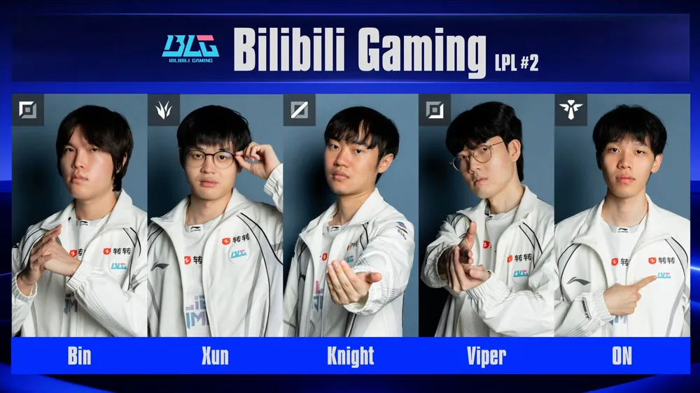

4강에서 T1을 3대1로 꺾고
BLG가 젠지와의 결승전으로 향합니다.
'가장 높은 산, 그리고 가장 긴 강. LPL의 영원한 숙적'
T1의 월즈 LPL 상대 다전제 전승이라는 전설적인 기록은
오늘로 끝납니다.
T1 고생했습니다.

4강에서 T1을 3대1로 꺾고
BLG가 젠지와의 결승전으로 향합니다.
'가장 높은 산, 그리고 가장 긴 강. LPL의 영원한 숙적'
T1의 월즈 LPL 상대 다전제 전승이라는 전설적인 기록은
오늘로 끝납니다.
T1 고생했습니다.
근데 녹턴은 진짜던지는거같았음 물론 실버의눈으로그래보였단거임
갓~~~~~버
진심으로 4경기내내
T1의 바텀투자 VS BLG의 탑투자 전략이 디폴트로 뻗어나갔다고 보는데
결국 그 투자대비 결과값의 크기가 BLG쪽이 너무나도 압도적이었다고봄.
심지어 상대적으로 투자못받은 바이퍼 온이 투자받은 페케보다 더 강력했다는 거.... 이게 너무 치명적이었음
도란이 욕을 안먹는 세계선은 도란이 바이퍼급으로 투자못받았어도 슈퍼플레이를 계속해내야한다고본다.
도란까는건 이미 프레임이 꽉잡혀있음. 이 여론은 돌리기가 쉽지않아
지금까지 페케가 끌고온건데 걔네 둘이 라인전부터 밀리니까 그냥 와르르멘션마냥 무너지더라. 강타싸움 지고 그런건 약간 아쉬운정도고 그냥 전체적으로 체급 자체가 밀렸건 경기같다. 티원팬들은 하던데로 도란 점찍고 갈구는것밖에 못하고ㅋㅋ 지독한놈들
ㄹㅇ 패케가 무너지니까 벤픽도 철학을 다 잃어버림
얘네가 이기는게 그냥 전제조건이었는데...... 그걸 전제로 오너도 탑보다는 바텀게임한거고 ㅠ
도란 데리고 작년에 우승한게 기적이지ㅋㅋㅋㅋㄱㅋㅋ 진짜 얼른 나가주셨으면 합니다. 갈때가 있을진 모르겠지만ㅋㅋ
뭐야 티원도 한화도 떨어졌었네 쵸비 진짜 성불하는건가ㅋㅋㅋㅋㅋ
도란 똥싼거 시발 존나 웃기더라 ㅋㅋㅋ
한두장면도아니고 탑에 투자를안하면 확정 100% 탑똥 터지는데
타임어택으로 탑살리기 게임했으니깐 졌지
원래 시발 바텀게임해야하는데 탑이 적당히 던져야지
젠지 따버리면 ㄹㅇ 이번 blg는 lck 킬러라고 소리 들을만한듯 ㅋㅋ
담원 한화 티원 다 따버리고 결승 ㄷㄷ
반대로 젠지가 우승하면 lpl 부흥을 막은 lck 수호자 20담원 포지션을 얻을 수 있을듯
T1 중국킬러아니었어?
고점은 몰라도 저점방어는 역대 최강이였으니까
프로게이머들은 왜이렇게 아이돌처럼 포즈를 취하는거냐
안하면 밋밋하잔아
가만 있는 킅은 왜 패냐... 나아쁜 놈... ㅠ